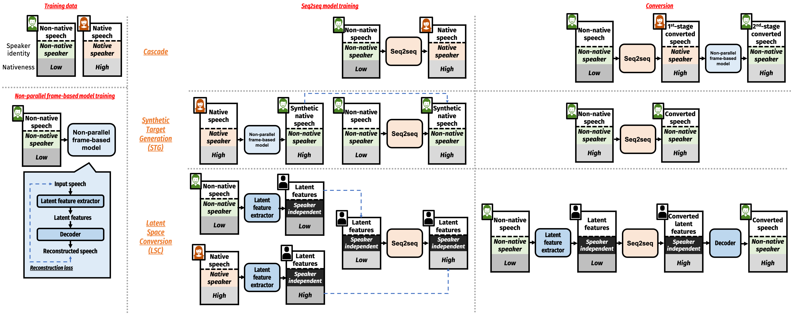

Abstract: Foreign accent conversion (FAC) is a special application of voice conversion (VC) which aims to convert the accented speech of a nonnative speaker to a native-sounding speech with the same speaker identity. FAC is difficult since the native speech from the desired non-native speaker to be used as the training target is impossible to collect. In this work, we evaluate three recently proposed methods for ground-truth-free FAC, where all of them aim to harness the power of sequence-to-sequence (seq2seq) and non-parallel VC models to properly convert the accent and control the speaker identity. We try to explain the effectiveness of these methods with the training input and output of the seq2seq model and examined the design choice of the non-parallel VC model. Finally, we show that intelligibility measures such as word error rates do not correlate well with subjective accentedness. These findings help us understand current approaches and identify the limitations and unsolved problems.
Proposed method

Dataset
We conducted all our experiments on the CMU Arctic database and the L2-Arctic database.
A male non-native source speaker (THXC) and a male native reference speaker (bdl) were chosen.
Speech Samples
Transcription: What an excited whispering and conferring took place.
Latent feature
Source
Cascade
STG
LSC
Reference
vq-wav2vec
PPG
Transcription: Thus he turned the tenets and jargon of psychology back on me..
Latent feature
Source
Cascade
STG
LSC
Reference
vq-wav2vec
PPG
Transcription: You were making them talk shop, Ruth charged him..